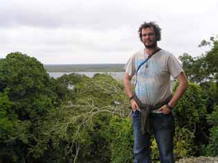
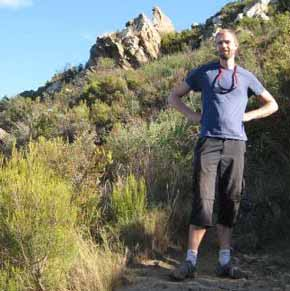

Joe Chipperfield
Joe Chipperfield is a researcher in the Quantitative Ecology Research Group at the Norwegian University of Life Sciences. Joe's work has focused on the application of Bayesian methods to extend and improve models of species' distributions. In particular he has been working heavily on constructing methods to make best use of the available data so that robust predictions can be made even when there may be limited data. Moreover, his work tries to address some of the common problems encountered in species distribution modelling: namely issues related to non-random sampling of occurrence data, the fact that 'absence' data is not often reliable, and that other non-climatic determinants of a species range may act on the observed distribution. Addressing these problems requires the building of various sub-models to describe these processes and knowledge of Bayesian techniques is essential to put these sub-models together to draw inference about the whole system. He has applied these methods to a variety of species including butterflies, cane toads, and even Neanderthals.
More recently, Joe has been looking at applying these techniques to model species distributions over palaeoecological time scales and allowing such models to be calibrated using palynological and limnological data sets. This will allow investigation into the extent of niche conservatism over previous glacial cycles and provide insight into how we might expect plant species to react to current global change. He also produces a statistical macroecology blog and tweets under @joechip90.
Florian Hartig
 Florian Hartig is a professor at the University of Regensburg. His main interests are the mechanisms that determine ecosystem functions and diversity patterns, at the community scale as well as at biogeographical and evolutionary scales. He is also interested in statistical methodology, conservation biology and ecological theory in general. To find out more about his work, check out his university webiste for a list of his publications and taught courses. He is a developer for the BayesianTools R package, runs a theoretical ecology blog, and tweets under @florianhartig.
Florian Hartig is a professor at the University of Regensburg. His main interests are the mechanisms that determine ecosystem functions and diversity patterns, at the community scale as well as at biogeographical and evolutionary scales. He is also interested in statistical methodology, conservation biology and ecological theory in general. To find out more about his work, check out his university webiste for a list of his publications and taught courses. He is a developer for the BayesianTools R package, runs a theoretical ecology blog, and tweets under @florianhartig.
Jörn Pagel
Jörn Pagel is a researcher at the University of Hohenheim interested in the development and application of statistical methods to investigate ecological dynamics in space and time. One focus of his work is the understanding and prediction of species range dynamics from combining various data types like wide-spread occurrence records and field measurements of demographic rates. Part of his work uses Proteaceae of the South African Fynbos as model organisms. Another recent interest is the exploitation of data from citizen science projects (e.g. for butterflies) not only for applied but also for basic research in biogeography.